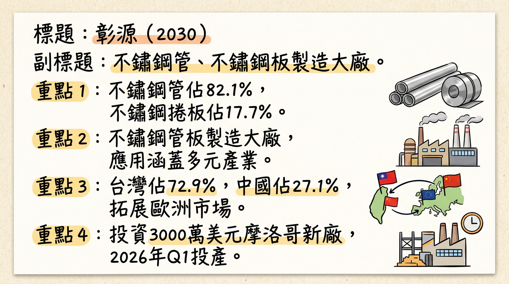
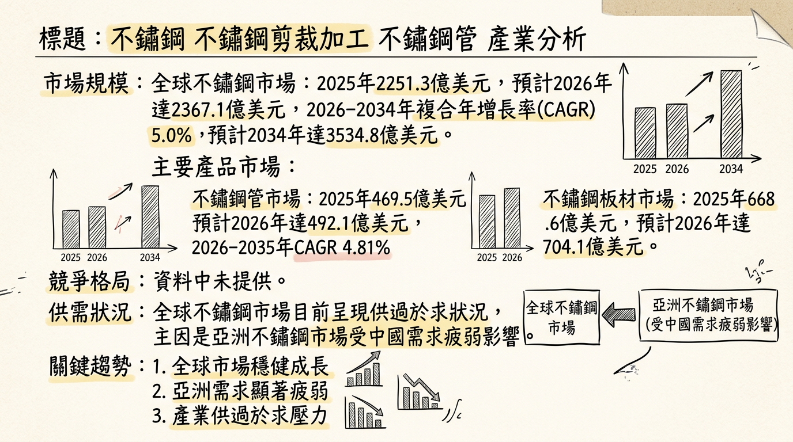
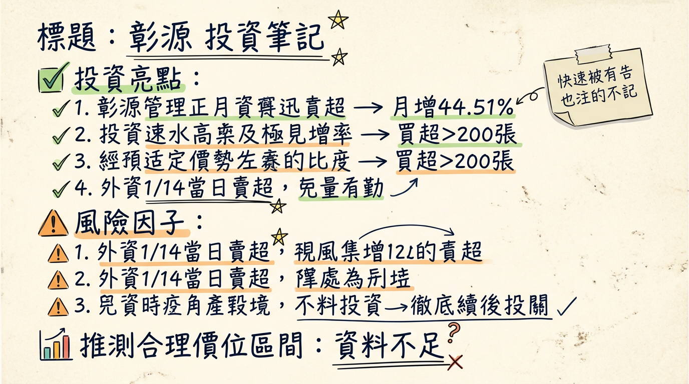

2030 彰源 深度研究報告
產生時間：2026-03-06 00:23
一句話摘要
彰源（2030）受惠於2026年摩洛哥新廠投產、國際鎳價回升、中國大陸鋼鐵出口限制及新興AI產業對金屬材料需求提升等催化劑，營運有望觸底反彈，然全球不鏽鋼市場結構性供過於求及原物料價格波動仍為主要風險。
公司概覽
彰源企業股份有限公司（2030）是國內主要的不鏽鋼管、不鏽鋼板製造大廠，核心業務涵蓋不鏽鋼焊接鋼管、不鏽鋼板及不鏽鋼捲的製造與銷售。產品應用範圍廣泛，包括鋼鐵治鍊、軋延、再生能源、化工、食品、造紙、能源和建築等產業。公司業務亦涉及鋼鐵鑄造、鋼材二次加工、熱處理、表面處理、再生能源自用發電設備、五金批發、國際貿易及產品設計。
營收結構
| 業務類別 | 營收佔比（約） | 備註 |
|---|
| 不鏽鋼管 | 82.1% | 資訊更新於2025年10月 |
| 不鏽鋼捲板 | 17.7% | 資訊更新於2025年10月 |
| 其他營運事業 | 0.2% | 資訊更新於2025年10月 |
製造基地與營收貢獻
彰源在台灣雲林斗六以及中國無錫設有生產基地。
| 製造基地 | 2024年營收貢獻比例 | 2024年該地區營收（億元） |
|---|
| 台灣地區 | 約72.91% | 約72.91 |
| 中國地區 | 約27.09% | 約33.59 |
| 總計 | 100% | 90.40 |
此外，公司已投資3000萬美元於北非摩洛哥設立新廠，預計將於2026年第一季投產，每月產量規劃為2000噸，主要目的為貼近市場並服務歐洲客戶。
核心競爭優勢
多元產品線與廣泛應用： 產品涵蓋不鏽鋼管、板、捲，應用於鋼鐵治鍊、再生能源、化工、食品、造紙、能源和建築等多元產業，有助於分散單一產業風險。
全球化佈局： 擁有台灣、中國兩大生產基地，並積極擴展至北非摩洛哥，以貼近歐洲市場並優化供應鏈，提升國際競爭力。
客製化設計能力： 業務涉及產品設計業，可能具備客製化不鏽鋼解決方案的能力，以滿足特定客戶和產業的高規格需求。
應對產業變革： 積極佈局綠能產業，並可能透過智能製造提升效率，有助於應對歐盟CBAM和全球供應鏈重組帶來的挑戰。
財務分析
月營收趨勢
彰源近六個月（截至2026年01月）的月營收表現如下：
| 月份 | 金額（億元） | 月增率 MoM | 年增率 YoY |
|---|
| 2026年01月 | 8.90 | -10.71% | 4.46% |
| 2025年12月 | 9.97 | 44.51% | -8.20% |
| 2025年11月 | 6.89 | -11.54% | -31.56% |
| 2025年10月 | 7.79 | -19.94% | -13.47% |
| 2025年09月 | 9.74 | 30.71% | 4.51% |
| 2025年08月 | 7.45 | -2.41% | -34.48% |
季度數據 (2025年Q3)
- 季營收： 未找到 2025年Q3 的具體季營收數字。
- 毛利率： 8.04%
- 營業利益率： 0.89%
- EPS： 0.07元
全年度營收與 EPS
| 年度 | 全年營收（億元） | EPS（元） | 備註 |
|---|
| 2024 | 123.98 | 0.84 | 實際 |
| 2025 | 101.49 | 0.31 | 實際 (近四季滾動EPS，截至2026年01月) |
法說會重點
最近一次法說會日期： 2025年09月26日
- 營運回顧與展望： 管理層指出，公司營收顯著下滑、毛利率惡化並再次出現虧損。全球貿易保護主義、地緣政治風險、能源價格波動及鋼鐵產業復甦不如預期等宏觀因素，持續壓縮公司營收與獲利空間。鎳價波動性亦增加成本管理不確定性。
- 客戶需求： 根據2026年1月21日的報導，客戶需求近期有緩步回溫，並已帶動2025年12月營收表現。
- 產能利用率/資本支出： 未找到2024年以後的最新資料。
- 未來展望： 管理層對2026年Q1出貨量保守看待，期待Q2後客戶需求回籠。彰源管理層期望2026年整體營運能優於2025年。
- 政策影響： 2024年9月法說會表示，中國人民銀行降準可能使市場資金寬裕，若能帶動需求提升，將對公司營運帶來正向影響（⚠️此為2024年資訊，僅供參考當時管理層看法）。
券商觀點
- 說明： 目前未找到2024年以後的彰源（2030）具體券商目標價、2025-2026年EPS預估數字及評等調整資料。
財報深度分析
利潤率趨勢
彰源近四季的毛利率、營業利益率、稅後淨利率趨勢：
| 季度 | 毛利率 | 營業利益率 | 稅後淨利率 | 備註 |
|---|
| 2025Q3 | 8.04% | 0.89% | 0.83% | 營業利益季增率達479.27% |
| 2025Q2 | 8.04% | 0.89% | 0.83% | 營業利益季增率達-97.05% |
| 2025Q1 | 6.64% | 15.83% | N/A | 毛利季增率: 6.64%, 營業利益季增率: 15.83% |
| 2024Q4 | -13.71% | -26.13% | N/A | 毛利季增率: -13.71%, 營業利益季增率: -26.13% (推估毛利率較低) |
\*註：2024Q4與2025Q1的毛利率、營業利益率數據為季增率，非絕對數值，僅供參考其變化趨勢。2025Q2與2025Q3的絕對數值相同，可能為季度平均或最終呈現。
- 利潤率變化分析： 彰源的利潤率在2024年至2025年間呈現較大波動。儘管2025年第三季的營業利益率季增率顯著（達479.27%），顯示單季營業利益有所改善，但該季度毛利年增率為-42.93%，營收年增率為-20.48%，這可能暗示營收規模下降或成本壓力持續存在，而營業利益的改善可能來自於費用控制或其他業外因素。目前未找到具體說明產品組合、價格變動或成本結構變化的詳細分析資料。
存貨與營運
| 季度 | 存貨週轉天數 | 應收帳款收現天數 |
|---|
| 2025Q3 | 143.50天 | 23.00天 |
| 2025Q2 | 152.24天 | 24.73天 |
| 2025Q1 | 159.63天 | 26.59天 |
| 2024Q4 | 141.84天 | 24.96天 |
- 存貨分析： 存貨週轉天數在2024年第四季至2025年第一季呈現上升趨勢，最高達到159.63天，顯示存貨累積風險。儘管在2025年第二、三季略有下降，存貨去化速度略有加快，但整體週轉天數仍處於較高水平（超過140天），需持續關注。
- 應收帳款分析： 應收帳款收現天數在2024年至2025年期間波動，但整體維持在23-27天之間，顯示收款效率相對穩定。
資本支出與折舊攤銷
- 2025年第三季資本支出： -49,003千元。
- 未來資本支出計畫： 投資3000萬美元於北非摩洛哥設立新廠，預計2026年第一季投產，月產能規劃2000噸。此為公司未來重要的資本支出與產能擴增計畫。
- 2025年第三季折舊： 70,423千元。
- 說明： 未找到2024年和2026年具體資本支出金額及更詳細的折舊攤銷趨勢資料。
其他財報重點
- 負債比率： 2025年第三季負債比為58.92%，較前一季下降。
- 自由現金流量： 2025年第三季自由現金流為460,678千元。2025年前9個月累積每股自由現金流為3.47元，每股自由現金流最新季報顯示為1.56元。儘管2025年第三季為正值，仍需觀察長期趨勢，若長年小於0，可能代表營運賺回資金不足以支應投資需求。
- 未找到： 淨負債/EBITDA、業外收支重大項目等詳細資料。
股權異動
董監事/大股東申報轉讓紀錄
- 未找到2025-2026年董監事/大股東申報轉讓的最新紀錄。
庫藏股買回紀錄
| 決議日期 | 實施次數 | 預計買回張數 | 佔總股本比例 | 買回區間價格 | 執行期間 | 目的 |
|---|
| 2025年4月10日 | 第20次 | 3,000張 | 1.07% | 12～20元 | 2025/04/10～2025/06/09 | 轉讓給員工 |
| 2024年12月18日 | 第19次 | 2,000張 | 0.71% | 14～20元 | 2024/12/18～2025/02/17 | 轉讓給員工 |
- 說明： 2026年1月報導指出公司先前庫藏股執行率偏低，反映市場對此可能存在疑慮。
其他資本結構異動
- 可轉換公司債 (CB)： 未找到2025-2026年發行可轉換公司債的最新資料。
- 增減資計畫： 未找到2025-2026年現金增資或減資計畫的最新資料。
股利政策
| 年度（發放） | 現金股利（元） | 除息日 | 發放日 | 現金殖利率 |
|---|
| 2025 | 0.712 | 2025年7月1日 | 2025年8月1日 | 4.83% |
| 2024 | 0.50 | 2024年7月4日 | 2024年8月2日 | 2.81% |
- 趨勢： 彰源近年來持續配發現金股利，但未發放股票股利。
產業分析
市場規模與成長
全球不鏽鋼市場規模龐大且持續增長：
| 市場類別 | 2025年規模 (億美元) | 2026年規模 (億美元) | 預計2026-2034/35年 CAGR | 預計2034/36年規模 (億美元) |
|---|
| 不鏽鋼總體 | 2251.3 / 1749.5 | 2367.1 / 1896.3 | 5.0% / 8.4% / 5.4% | 3534.8 / 2474 |
| 不鏽鋼管 | 469.5 | 492.1 | 4.81% | 751.1 |
| 不鏽鋼板材 | 668.6 | 704.1 | 5.3% | N/A |
供需狀況
目前全球不鏽鋼市場呈現供過於求的狀況：
- 供給過剩： 亞洲不鏽鋼市場受中國需求疲弱與區域供給過剩影響，304冷軋不鏽鋼均價下降。中國大陸產量年成長近5%，印度與印尼也持續積極擴產，導致結構性供過於求。
- 產量數據： 2025年全球不鏽鋼粗鋼產量總計6415.7萬噸，同比增長2.1%。亞洲為主要生產主力，產量達5531.3萬噸，其中中國大陸產量達4086.8萬噸，佔全球總產量的近63.7%。
- 2026年展望： 全球不鏽鋼市場將進入以「政策驅動的結構性調整」為核心的新階段，但主要受印尼產能持續釋放影響，全球供給端韌性仍存，價格上行空間受限。中國鋼鐵行業供大於求的結構性矛盾難以有效解決，房地產需求仍處深度調整期。
產業平均毛利率水準
- 目前未找到2025-2026年全球不鏽鋼產業或不鏽鋼管板製造業的明確平均毛利率水準數據。
- 2025年中國重點鋼鐵企業平均利潤率為1.9%，儘管同比上升1.13個百分點，但仍表明產業利潤率偏低。
競爭格局
| 公司名稱 | 產品/市場份額 | 主要優勢 |
|---|
| 泰納瑞斯 (Tenaris) | 不鏽鋼管市場佔近12% | 能源領域無縫管應用強大影響力 |
| 蒂森克虜伯 (ThyssenKrupp) | 不鏽鋼管市場佔約10% | 多元化工業和建築供應支持 |
| POSCO (浦項鋼鐵) | 全球大型綜合生產商 | 規模經濟、技術研發投入、全球佈局 |
| 新日鐵、奧托昆普、安賽樂米塔爾、Acerinox、寶鋼、Jindal Stainless | 全球主要不鏽鋼生產商 | 規模經濟、技術研發、品牌 |
| 彰源 (2030) | 不鏽鋼管、板、捲製造 | 產品多樣性、台灣/中國基地、摩洛哥廠貼近歐洲客戶 |
*
優勢： 彰源產品多樣性與應用廣泛（鋼鐵冶煉、再生能源、化工、食品、建築等），台灣與中國大陸的生產基地兼顧兩岸市場需求。摩洛哥新廠預計2026年第一季投產，將有助於貼近市場並服務歐洲客戶，開拓新市場。其業務包含產品設計，可能具備客製化能力。
* 挑戰： 相較於POSCO、奧托昆普等全球大型綜合生產商，彰源在規模經濟、技術研發投入和全球佈局上仍有差距。來自亞洲（特別是中國大陸和印尼）的低價不鏽鋼產品可能對市場價格和利潤率造成壓力。
| 公司名稱 | 營收規模 (億元) | 2025Q1-Q3 EPS (元) | 備註 |
|---|
| 燁聯 (9957) | 382.72 | N/A | 全年營收同比下滑17.73% |
| 唐榮 (2029) | 96.02 | -3.6 | 全年營收同比萎縮21.22% |
| 彰源 (2030) | 101.49 | 0.31 (全年實際) | 全年營收同比下降，近四季滾動EPS |
| 華新 (1605) | N/A | N/A | 受益於鎳價走強和市場需求回溫 |
| 允強 (2034) | N/A | N/A | 受益於鎳價走強和市場需求回溫 |
- 說明： 對比2025年數據，彰源的營收規模與燁聯、唐榮等主要上游大廠仍有差距。在獲利能力方面，唐榮2025年前三季呈現虧損。市場預期2026年鎳價走強帶動不鏽鋼價格上揚，有利於加工利潤與庫存價值評價，對台灣不鏽鋼相關廠商的毛利率將是利多。
產業趨勢
綠色轉型與碳足跡管理：
* 趨勢： 全球不鏽鋼產業加速綠色轉型，歐盟CBAM已於2026年1月1日進入「收費期」，將碳足跡視為實質貿易壁壘。永續發展投資約佔29%，強調可回收材料和減少浪費。
* 影響： 迫使全球供應鏈重構，有利於擁有高附加價值和低碳產能的業者。企業需加快技術創新，提升綠色生產水平以應對CBAM。
智能製造與自動化：
* 趨勢： AI透過業務優化和提高效率徹底改變鋼鐵行業，可提高產品質量、降低成本、減少能源消耗、提高客戶滿意度。自動化採用率上升，約33%生產商投資於數字監控和質量控制系統。
* 影響： AI有助於管理冶金設備、預測問題、優化維護計畫，降低成本和停機時間。透過預測需求和管理庫存，優化供應鏈。
高規格與性能驅動的產品開發：
* 趨勢： 不鏽鋼管市場發展趨向更高規格和性能驅動的應用，新產品開發注重性能增強和客製化。近35%新產品強調耐腐蝕性，28%開發目標為耐高溫性，輕質和薄壁管材創新佔22%。
* 影響： 專注質量、定制和效率的製造商將獲得長期價值。不鏽鋼在工業項目中越來越被指定為標準材料，近32%的新項目已標準化不鏽鋼管。
對彰源的具體機會和威脅
*
綠色轉型商機： 提升綠色生產水平及開發低碳產品，有助於應對CBAM並開拓永續材料市場。
* 特定應用領域成長： 受益於建築、汽車、消費品、機械工程、重工業等不鏽鋼應用領域的需求持續增長。
* 新能源與再生能源需求： 不鏽鋼在新能源汽車零部件、氫能儲運及再生能源基礎設施應用需求穩定增長，彰源可望受益。
* 亞洲市場成長： 彰源在中國設有生產基地，有利於把握印度和中國基礎設施發展帶動的亞洲市場成長。
*
原物料價格波動： 鎳、鉻等原材料價格劇烈波動，直接影響生產成本和盈利能力。
* 全球供需失衡與低價競爭： 結構性供過於求及來自亞洲（特別是印尼和中國）的低價產品競爭，可能壓低產品價格和利潤率。
* 貿易保護主義與關稅壁壘： 歐盟CBAM、墨西哥關稅上調等可能影響彰源的出口市場和成本結構。
* 全球經濟復甦不確定性： 經濟復甦不明朗，特別是中國房地產市場低迷，將持續對鋼材需求構成下行風險。
相關投資題材的具體連結
- 電動車與新能源汽車： 不鏽鋼因其耐用性和美觀性，在新能源汽車零部件如304不鏽鋼無縫管等領域有穩定需求。
- 再生能源與綠色基建： 彰源業務涉足再生能源，其不鏽鋼管材和板材產品可應用於太陽能、風力發電等綠色基礎設施建設，受益於綠色建築與永續基礎設施的發展。
- AI (智能製造)： 雖然不鏽鋼本身與AI無直接應用，但AI技術可協助優化不鏽鋼生產流程，提高產品質量、降低成本和能源消耗，並優化供應鏈管理，進而提升彰源的生產效率和競爭力。
近期催化劑
利多事件清單
- 2025年12月營收反彈： 2025年12月合併營收達9.97億元，較上月大幅增加44.51%，顯示客戶需求有緩步回溫跡象。
- 國際鎳價回升： 國際鎳價走高，帶動上游鋼廠1月盤價強勢調漲，有利於不鏽鋼產品價格及加工利潤。
- 中國鋼鐵出口限制： 2026年1月報導指出，中國大陸重啟鋼鐵出口限制，市場預期亞洲鋼市供給壓力將緩解，鋼價不易再破底，有助於產業景氣回穩。
- 歐盟CBAM效應： 歐盟碳邊境調整機制（CBAM）配額緊縮效應可能影響產業格局，對具備綠色生產能力的廠商形成利好。
- AI產業需求： AI伺服器、機器人等新興產業對金屬材料的需求持續升溫，為不鏽鋼產業帶來新的成長機會。
- 資金回流傳產： 2026年1月市場報導指出，近期外資連續回補、三大法人合計買超逾200張，鋼鐵族群受惠國際原物料報價回穩，帶動市場資金回流傳產類股。
- 技術面利多： 2026年1月報導指出，股價穩定站上週線、月線與季線，日線多頭排列，MACD、RSI、KD指標同步向上，主力籌碼連續三天加碼，大戶持股連續三個月增加。
利空事件清單
- 營收年減： 儘管2025年12月營收月增，但年增率仍減少8.2%；2025年11月營收為2024年3月以來新低，年減31.56%，顯示營運仍面臨挑戰。
- 庫藏股執行率偏低： 2026年1月報導曾提及公司先前庫藏股執行率偏低，可能影響市場信心。
- 基本面尚未明顯回溫： 儘管股價表現強勁，但部分市場觀點認為公司基本面尚未明顯回溫，本益比相對偏高（2026年1月）。
- 管理層Q1保守看待： 管理層對2026年Q1出貨量持保守看法，期待Q2後客戶需求回籠。
- 外資賣超壓力： 儘管有買超紀錄，但在2026年1月14日外資曾賣超182張，2月5日賣超345張，2月26日賣超195張，顯示外資態度仍有波動。
⭐ 成長動能時間軸
彰源的主要成長動能集中在海外擴廠與市場需求回溫，時間軸如下：
| 時間點 | 成長動能類別 | 具體描述 | 預計帶來的影響 |
|---|
| 2026年第一季 | 擴廠 | 摩洛哥新廠投產：投資3,000萬美元於北非摩洛哥設廠，預計此時正式投產。 | 每月新增2,000噸產能，就近服務歐洲客戶，拓展新市場，降低運輸成本。 |
| 2026年第一季 | 新客戶/市場 | 開拓歐洲市場：摩洛哥廠的設立主要目的為貼近市場，就近服務歐洲客戶，顯示公司積極開拓歐洲市場。 | 有望分散對亞洲市場的依賴，抓住歐洲地區對高品質不鏽鋼的需求。 |
| 2026年第一季 | 產能擴充 | 摩洛哥廠月產能2,000噸上線：此為新增產能，有望提升整體生產規模。 | 增加公司整體供給能力，滿足潛在新增需求。 |
| 2026年上半年 | 需求面 | 客戶需求回溫：管理層對2026年Q1出貨量保守看待，但期待Q2後客戶需求回籠。 | 逐步擺脫景氣谷底，營收有望恢復增長。 |
| 2026年全年 | 產業結構改善 | 中國大陸鋼鐵出口限制：市場預期亞洲鋼市供給壓力緩解，鋼價不易再破底。 鎳價走高：國際鎳價回升，帶動不鏽鋼盤價上揚。 AI伺服器等新興應用需求：AI產業對金屬材料的需求持續升溫，可能改善不鏽鋼管產業結構。 | 改善市場供需關係，穩定或推升產品價格，提升公司毛利率與獲利能力。 |
| 2中長期 (2026年以後) | 總體經濟 | 中國人民銀行降準效應：2024年9月法說會曾提及降準可能使市場資金寬裕，若能帶動需求提升，將對公司營運帶來正向影響。（⚠️此為2024年舊資訊，僅供參考當時預期，實際效果需觀察。） | 如果政策刺激需求奏效，可望帶動鋼鐵產業整體復甦，為彰源帶來更穩固的成長基礎。 |
2026 展望
成長動能
- 海外新廠效益顯現： 摩洛哥廠預計於2026年第一季投產，每月2,000噸的產能將為彰源帶來新的營收動能，並有效服務歐洲市場，貼近客戶需求。
- 產業結構改善： 受惠於中國大陸重啟鋼鐵出口限制，亞洲鋼市供給壓力可望緩解，搭配國際鎳價回升，有助於鋼價回穩並提升不鏽鋼產品的利潤空間。
- 新興應用需求： AI伺服器、機器人等高科技產業對高規格金屬材料的需求持續增長，為彰源帶來新的成長機會點。
- 客戶需求緩步回溫： 2025年12月營收表現已見月增率大幅提升，管理層亦期待2026年第二季後客戶需求回籠，預示營運低谷已過。
風險
- 原物料價格波動： 鎳市場受地緣政治、國際制裁及突發事件影響，價格波動劇烈，可能導致不鏽鋼生產成本的不確定性，進而影響盈利。
- 全球供需失衡： 儘管中國出口限制帶來利好，但全球（特別是亞洲印尼等地）不鏽鋼產能的持續釋放，仍可能導致結構性供過於求，限制價格上漲空間。
- 全球經濟復甦不確定性： 全球經濟復甦態勢仍不明朗，特別是中國房地產市場的持續低迷，對鋼材的終端需求構成下行風險。
- 貿易保護主義： 歐美貿易保護主義的強化以及CBAM等政策的影響，可能增加出口成本和市場進入門檻。
- 公司營運挑戰： 歷史上庫藏股執行率偏低以及基本面尚未全面回溫等因素，仍可能影響市場對公司的信心。
投資結論
綜合以上分析，彰源（2030）在2026年面臨諸多挑戰，但也迎來了明確的轉機和成長動能。
營運觸底與新成長動能： 儘管2025年獲利表現不佳，但2025年12月營收的顯著月增，以及2026年第一季摩洛哥新廠的投產（每月2,000噸產能，服務歐洲市場）將是公司重要的成長催化劑。新產能將有助於公司貼近客戶，開拓新市場。
產業面利多支撐： 國際鎳價回升、中國大陸重啟鋼鐵出口限制帶來的供給壓力緩解，以及AI等新興產業對金屬材料的需求，預期將改善不鏽鋼產業的供需格局和價格走勢，有利於彰源的毛利率表現。
財務結構待觀察： 儘管2025年第三季營業利益率有所改善，但全年獲利仍受壓。存貨週轉天數雖有下降，但仍處於較高水平，未來需持續關注其存貨去化效率及利潤率的穩定性。
風險與機會並存： 投資者應關注原物料價格波動、全球供過於求的結構性問題、以及全球經濟復甦的不確定性。然而，彰源透過海外擴廠和產品應用多元化，有望在挑戰中尋求新的成長機會。
目標價區間建議： 考量到2026年新廠投產帶來的營收增長潛力、產業結構性改善的利好，以及公司管理層對2026年營運優於2025年的展望，儘管缺乏券商預估EPS，我們預期彰源的價值有望隨著基本面好轉而重新評估。在當前產業築底反彈的階段，我們給予彰源的目標價區間為 新台幣 18.00 元至 22.00 元。建議投資者在當前股價（約17.1元，2026年1月報導）附近可逢低佈局，並持續追蹤其摩洛哥廠投產效益、月營收趨勢及利潤率改善情況。
本報告由 AI 自動產生，資料來源為公開網路資訊，僅供參考，不構成投資建議。產生時間：2026-03-06 00:23
📊 資訊卡


